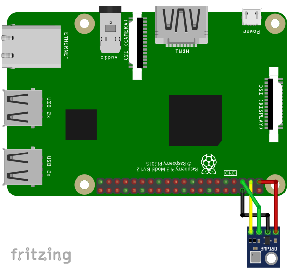

The BMP180 is a temperature and pressure sensors using the I2C-protocol for communication.
To use the BMP180, import the library bmp180
import bmp180Open()
Open(interface)
Open(interface, address)Open the BMP180 on interface interface with I2C address
address.
interface
"/dev/i2c-1"address
0x77.Example:
Open("/dev/i2c-1", 0x77)M = StartMeasurement()Measure temperature and pressure.
M
M[0]: Temperature in °CM[1]: Pressure in PascalClose()Close the BMP180 device.
For running this example, you need a BMP180. SmallBASIC PiGPIO 2 is using the I2C-protocol for communication. The Raspberry Pi supports this protocol in hardware, but by default the protocol is disabled. Therefore you have to setup I2C as described here.
In the next step please wire the sensor as shown in the following image.

The I2C bus is using pin 2 (SDA1) and 3 (SCL1). The sensor can be driven with a voltage of 3.3V.
import bmp180
bmp180.open("/dev/i2c-1", 0x77)
delay(500)
for ii = 1 to 50
M = bmp180.StartMeasurement()
locate 5,0
print "T: "; M[0]; " P: "; M[1]
delay(500)
next